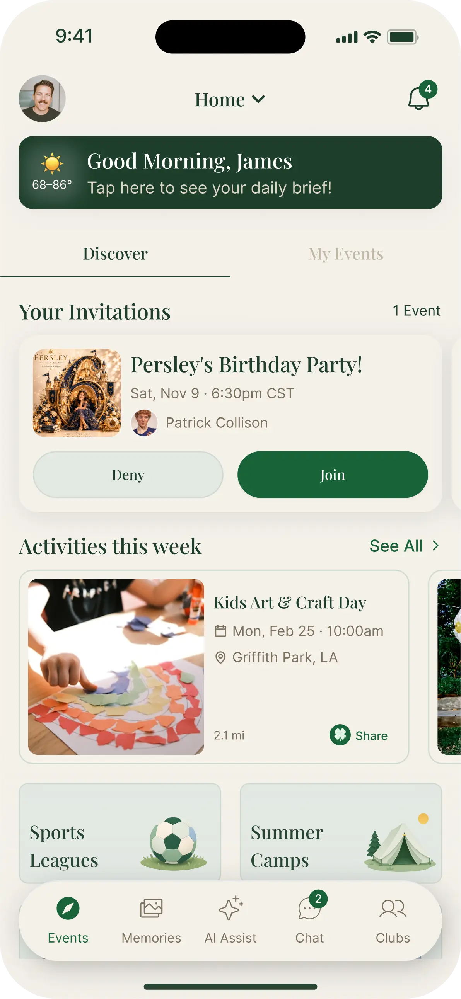

Hero, staged on load
The only place allowed to announce itself. Today the hero sits above the fold, so the observer fires instantly and it gets the same generic fade as a footnote nine sections later. Here the lines arrive in reading order and the app screen lands last, so the eye finishes on the product.
950ms arrivescreen, +340ms
connected.

The day switcher
The most product-explaining moment on the page, and the one already animated. Today the whole panel fades as a block, which reads as a refresh. Move the number and each line separately and it reads as the day changing. Click the tabs on both sides to compare.
Lines450ms, 70ms apart
- Today's schedule
- Lunch and reminders
- Who is picking up

- Today's schedule
- Lunch and reminders
- Who is picking up
Community, a circle assembling
The one section carrying real photographs of families rather than screenshots, under "Know the parents your kids already know." Three photos arriving at the same instant is a missed beat. A hundred milliseconds apart and it reads as a circle forming.


The close
After eight identical fades, the last panel should land rather than appear. The store badges arrive last and with a touch more weight, because they are the only thing on the page you actually want tapped.
800ms arrivebadges, +360ms
childhoods flourish.